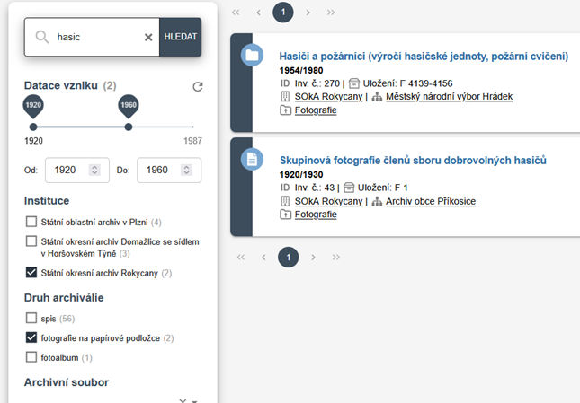

Jak na webu vyhledávat¶
Fulltextové vyhledávání¶
Fulltext nerozlišuje velká a malá písmena a ignoruje diakritiku. Pokud chceme vyhledat archiválie vztahující se k lyžařům, stačí zadat např. lyzar.
Vyhledávač však neumí pracovat s různými koncovkami slov. Pokud zadáme lyžařský, nenajdou se záznamy obsahující výraz lyžařské. Vhodnější je hledat zkráceným řetězcem, např. lyzarsk nebo lyzar.
Pro víceslovné řetězce platí, že první slovo musí být zadáno celé, další slova lze zkrátit. Například dotaz hasicska zbrojn vyhledá záznamy o hasičských zbrojnicích, zatímco hasic zbrojn nenajde nic.
Platforma ARON se dále vyvíjí a v nejbližší době bude věnována zvýšená pozornost vyhledávání, což povede k výraznému zlepšení jeho schopností.
Filtrování výsledků¶
Výsledky vyhledávání je možné zpřesnit pomocí filtrů, které se liší podle jednotlivých sekcí (Archivní soubory, Archiválie, Přístupové body). Filtry lze kombinovat a vždy se zobrazí jen záznamy splňující všechny zadané podmínky.

Řazení výsledků¶
Výsledky jsou v současnosti řazeny pouze podle relevance. Nejprve se zobrazují záznamy, kde se hledaný výraz nachází v názvu, až poté záznamy s výskytem v jiných polích.
Do budoucna se počítá i s možností řazení podle dalších kritérií (např. datace vzniku).
Hledání podle přístupových bodů¶
Další možností je vyhledávání pomocí přístupových bodů (entit). Ty fungují podobně jako klíčová slova, ale jsou řízené archivní autority: osoby, korporace, místa, události, díla či pojmy.
Výhodou je, že všechny archiválie napojené na stejnou entitu se dají dohledat jedním kliknutím. Nevýhodou je, že napojování entit je zatím v začátcích, a proto nejsou výsledky úplné.